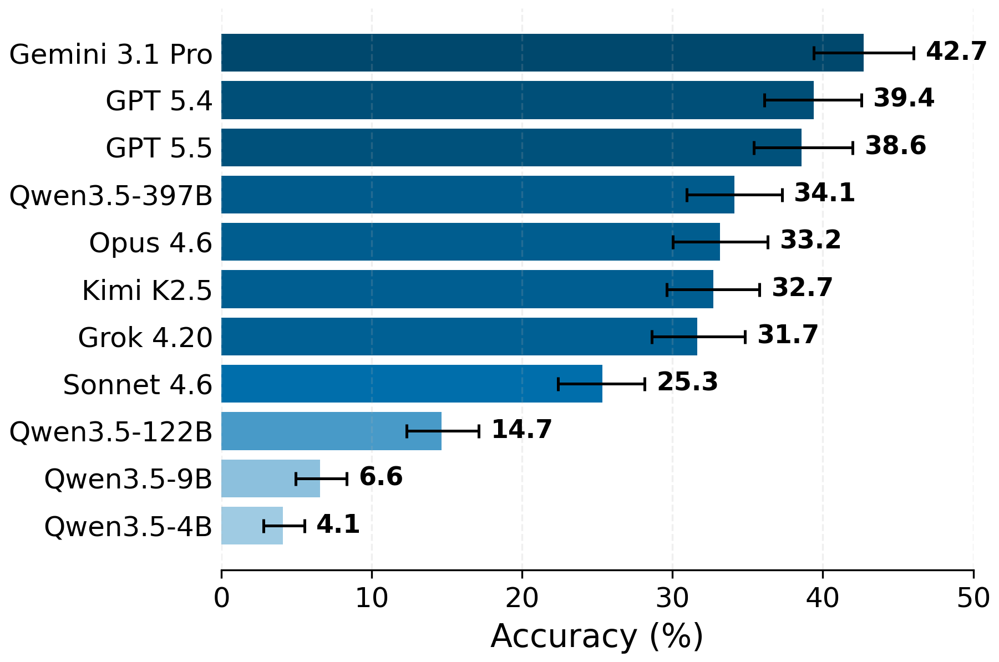
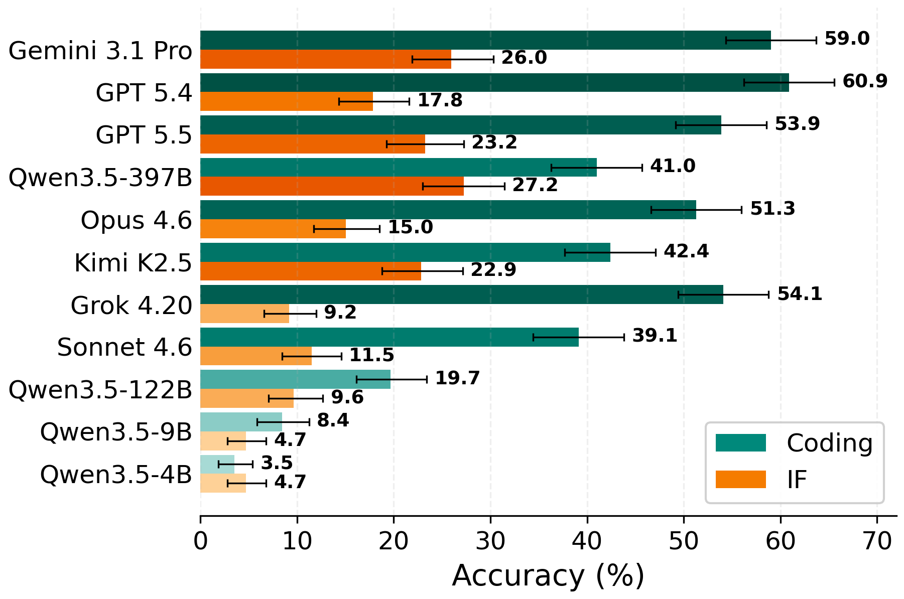
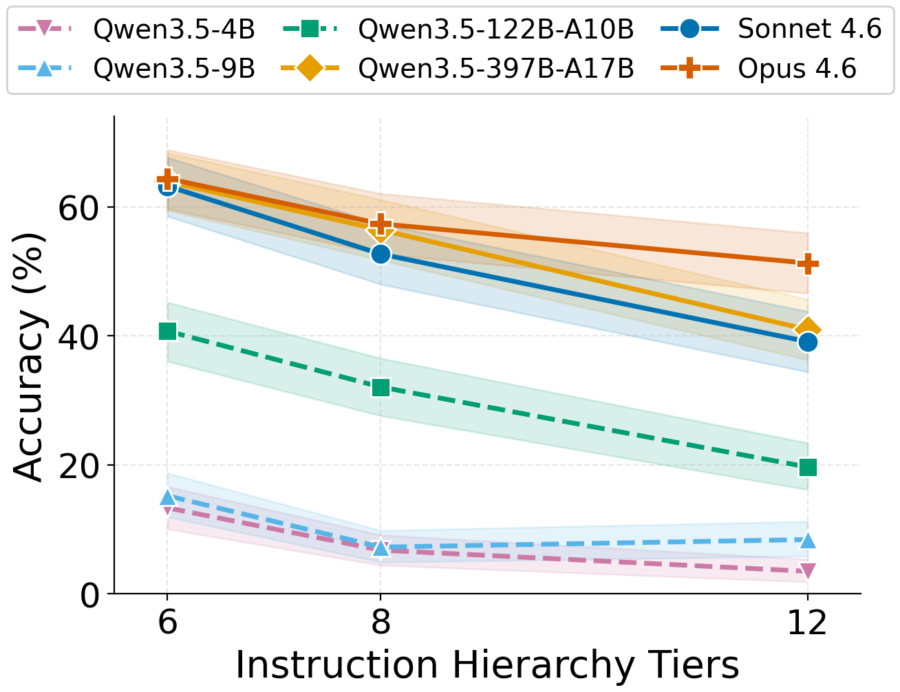

A benchmark for evaluating how LLMs resolve instruction conflicts across arbitrarily many privilege levels.
LLM agents receive instructions from many sources—system messages, user prompts, tool outputs, skill files, and other agents—each carrying different levels of trust and authority. The Instruction Hierarchy (IH) formalizes how models should resolve conflicts among instructions of different privilege levels.
Current IH implementations assume a fixed, small set of privilege levels (typically fewer than five) defined by rigid role labels (e.g., system > user). Because models learn to operate over these role labels fixed during training, they are limited to a small number of privilege tiers—creating a fixed- and few-tier bottleneck.
This is insufficient for real-world agentic settings. For instance, a coding agent may receive multi-level guidelines from system prompts, developer configs, skill files, user messages, and tool outputs with varying trust levels. In group chats, participants may hold heterogeneous privileges (admins, moderators, members), creating multiple tiers within what is traditionally a single "user" role.
Many-Tier Instruction Hierarchy (ManyIH) resolves this bottleneck. Rather than deriving privilege from role labels, ManyIH dynamically assigns each instruction a privilege value via a dedicated Privilege Prompt Interface (PPI) and resolves conflicts by comparing these values. Two PPI variants are proposed:
[[Privilege 2]]), where lower number = higher privilege.[[z=82]]), where larger value = higher privilege.Conflicts are resolved based solely on the relative ordering of privilege values, not their absolute magnitudes. This decouples privilege semantics from message role labels, enabling models to reason over arbitrarily many privilege levels specified at inference time.
Ten frontier proprietary and open-source models were evaluated on ManyIH-Bench with temperature 0 and reasoning effort set to high. Even the best model (Gemini 3.1 Pro) achieves only 42.7% accuracy, revealing that many-tier instruction conflict resolution is a challenging, unsolved capability.


Notably, models that excel at standard two-tier IH do not necessarily generalize to the many-tier setting. For example, GPT 5.4 reports >99% accuracy on two-tier IH evaluations such as system prompt extraction, yet achieves only 39.4% on ManyIH-Bench. Human validation confirms a ceiling of at least ~80% accuracy is attainable, indicating significant room for improvement.
To isolate the effect of IH complexity from instruction following difficulty, three Coding subset variants were created with 6, 8, and 12 privilege tiers while holding the number of style groups and winning instructions fixed.

On the Coding subset, style compliance is the primary bottleneck for overall accuracy. All frontier models maintain high functional correctness (>86% test accuracy), but style accuracy—which requires reasoning over ManyIH privilege levels—is much lower.
| Model | Accuracy | Test Acc | Style Acc |
|---|---|---|---|
| GPT 5.4 | 60.9% | 89.7% | 67.9% |
| Gemini 3.1 Pro | 59.0% | 91.3% | 65.1% |
| Grok 4.20 | 54.1% | 86.2% | 63.0% |
| Opus 4.6 | 51.3% | 92.5% | 56.7% |
| Kimi K2.5 | 42.4% | 87.4% | 49.4% |
| Sonnet 4.6 | 39.1% | 91.6% | 42.4% |
| Qwen3.5-397B | 41.0% | 87.4% | 48.2% |
| Qwen3.5-122B | 19.7% | 65.3% | 31.6% |
| Qwen3.5-9B | 8.4% | 71.7% | 13.3% |
| Qwen3.5-4B | 3.5% | 61.8% | 7.7% |
ManyIH-Bench is the first benchmark designed to evaluate instruction conflict resolution under arbitrarily many privilege levels. It comprises 853 agentic tasks with up to 12 distinct privilege levels per sample, compared to 2–3 levels in prior work.
Pairs MBPP coding problems with conflicting style instructions (e.g., naming conventions, indentation, operator spacing) inspired by PEP 8, simulating realistic system constraints from many sources. Each sample contains 12 style instructions across 4 style groups with up to 12 privilege levels, averaging 9.8 conflicts and 6 winning style instructions. The model must produce code that is both functionally correct and adheres to the highest-privilege style in each conflict group. Evaluation is fully programmatic via unit tests and code-based style checkers.
Draws from agentic instruction-following scenarios spanning 46 domains in the AgentIF dataset, augmented with privilege-annotated conflicting constraints via a multi-step LLM pipeline verified by humans. Each sample contains an average of 12.8 active and 6.6 suppressed (lower-privilege) constraints across 1–4 conflict groups with up to 7 privilege levels. Evaluation uses code checkers and LLM judges on individual constraints.
A model passes a sample if and only if all active (winning) instructions are satisfied, plus all unit tests for the Coding subset. This strict all-or-nothing criterion ensures that partial adherence to ManyIH—such as satisfying only non-conflicting instructions while ignoring privilege-based resolution—is not rewarded.